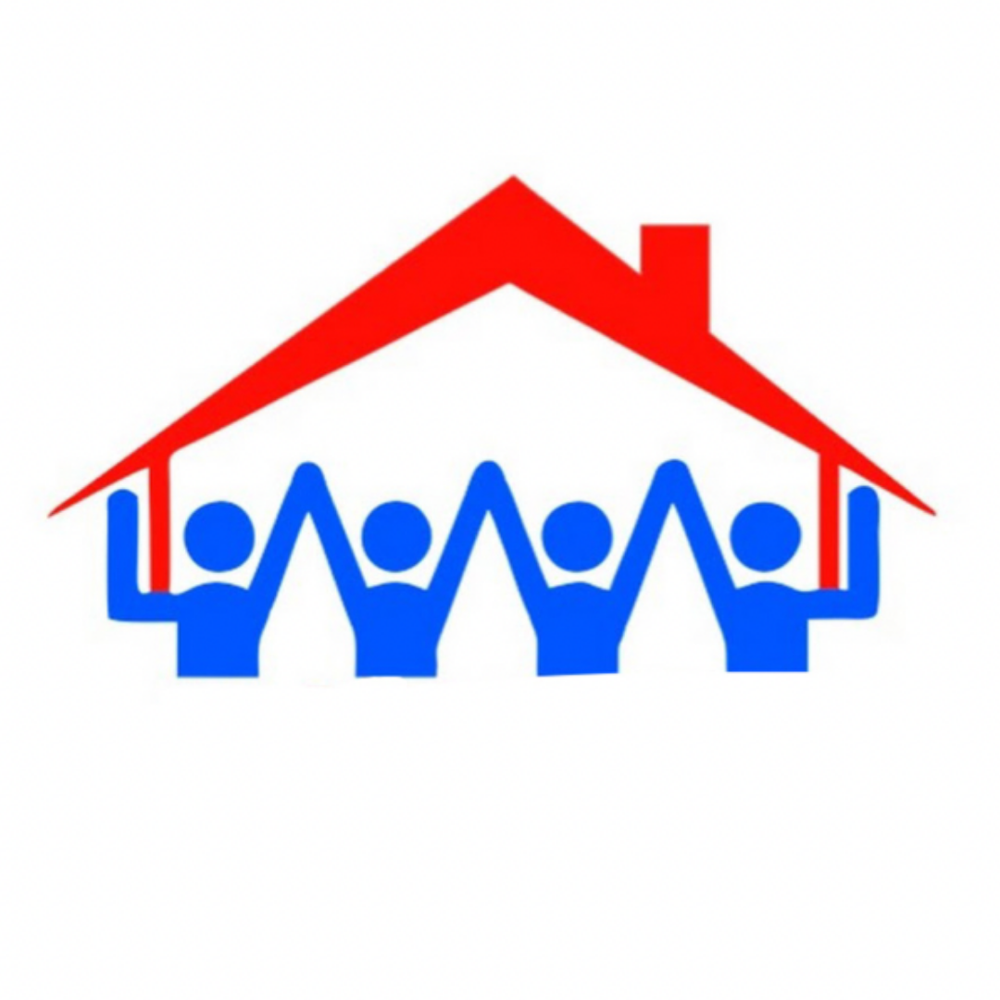

What we offer:
- Providing assistance to those in need
- Protect the environment
- Help homeless animals
- Donation to medical organizations
- Sponsor support
We stand for people to help and support each other in society and take care of nature and animals.
True charity has two important principles - it is selflessness and spiritual satisfaction from doing a good deed~
| Fund | Info | Contacts |
|---|---|---|
| Fund of the FPRK - Elbasy is the largest non-profit foundation in Kazakhstan, whose activities are based on the principles of professional management and consistency of all projects. The Foundation was established in 2000 on the personal initiative of Nursultan Nazarbayev. The Mission of fund is to develop the limitless potential of society by helping talented youth and supporting socially significant social projects. | Official website of the Foundation: https://fnn.kz/ Address: 010018, Nur-Sultan, str. A.Bokeikhan, 1, "Nazarbayev Center" Contacts: +7 (7172) 70 83 04 E-mail: Astana_fond@fpp.kz |
|
 |
The Sabi Foundation provides assistance to orphans and childrens without parental care, talented children from socially unprotected families, children with serious health problems, as well as, expanding the boundary of the main goals, people with disabilities. The main focus of the Foundation's work: -children's health and their physical development -spirituality and accessibility of education The mission of the Sabi Foundation is to promote public understanding of the sphere of charity, to make philanthropy effective for beneficiaries and attractive for sponsors. |
Official website of the Foundation: http://saby.kz/ru Address: Almaty, Dostyk Ave., 250 Contacts: +7 (727) 311 29 38 E-mail: saby@saby.kz |
|  | The purpose of Charity Foundation “Харекет” is to help needy families buy a house and collect charity boxes. After each collection, a family search is carried out and documents are checked, criteria are considered. Finding sponsors, partners and holding events helps in collecting. Thanks to this fund, many families have already purchased their home and were pleased. | Official website of the Foundation: https://xareket.kz/ru Address: 050033, Almaty, a. Alatau, 133A Ryskulova Ave., office 25 Contacts: 8-727-221-91-91 E-mail: Hareketalmaty@mail.ru |